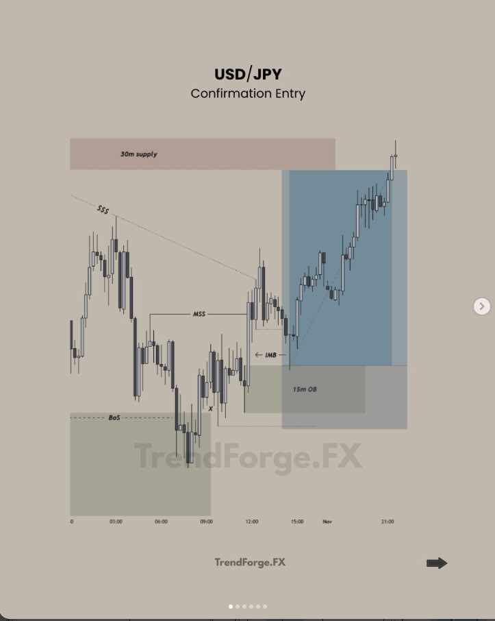
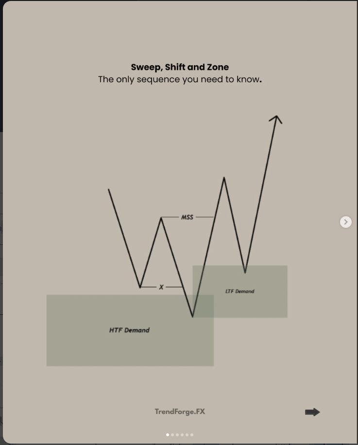
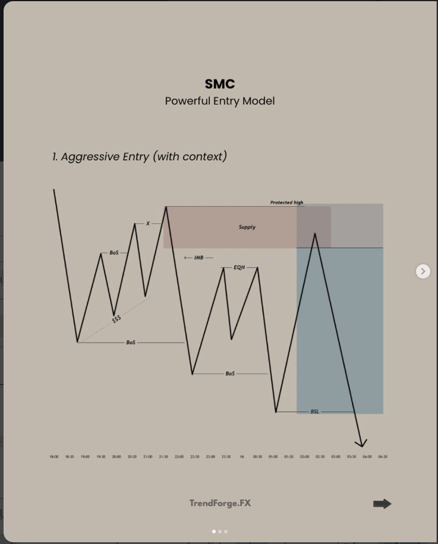
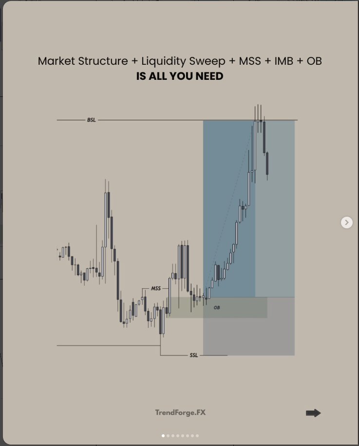
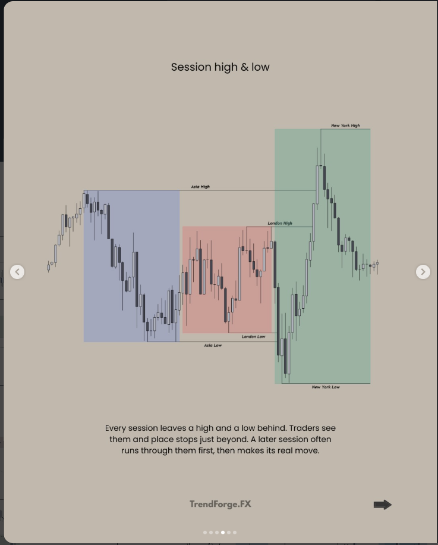

Smart Money Concepts · Trade breakdowns
Why the trade was taken, one chart at a time.
Each case study walks through a real setup slide by slide: where liquidity was resting, how structure shifted, which zone gave the entry, where the stop went and why the target was chosen. Every one ends with a checklist you can run on tomorrow's chart.
Browse the case studies Concepts Open the playbook
Case studies by pair
Pick a trade to study
USD/JPY
2 case studiesUSD/JPY — Confirmation Entry
Price returns to a 4H demand zone, sweeps the last low, shifts structure on the 30m, and offers a 15m order-block entry targeting the opposing 30m supply.
- Long
- 4H demand → 30m MSS → 15m OB
- TP hit · ≈ 1:3

USD/JPY — Case Study Breakdown
The 1H sweeps a low and shifts bullish. Price returns to the 30m demand through the inducement low. The 15m sweeps and shifts at the zone, and the long is taken at the 15m demand toward the high above.
- Long
- 1H MSS → 30m demand → 15m demand
- TP hit · ≈ 1:3.3
XAU/USD
1 case studyGBP/JPY
1 case studyBTC/USD
2 case studies
BTC/USD — What Happens After the Sweep
Price sweeps a low and shifts up on the 15m, then rallies without filling the order. About nine hours later it returns deep into the order block, fills the long and runs to the highs.
- Long
- Sweep → 15m MSS → wait for OB
- TP hit · ≈ 1:3.5

BTC/USD — Sweep, Shift and Zone
The 4H sweeps its range lows and shifts up. On the 1H, equal lows are run into demand, structure shifts, and the long is taken from the 1H demand the shift leaves behind.
- Long
- 4H sweep + MSS → 1H MSS → 1H demand
- TP hit · ≈ 1:3.4
AUD/USD
1 case studyGBP/AUD
1 case studyGBP/USD
1 case studyNew pairs and examples appear here and in the “Case studies” menu as they are added.
Concepts
Ideas behind the trades

Aggressive vs confirmation entry
Two ways into the same trade. Sell the zone on touch when the context is strong, or wait for a change of character and sell the smaller zone it leaves. Rules, stops, targets and when to use each.
- 2 models
- Drawn as shorts

Inducement: a liquidity trap
Why the first clean-looking zone after a shift is often bait, how to tell it from the zone the move really came from, and where the entry, stop and target go.
- Concept
- Drawn as longs

The full sequence
Market structure, liquidity sweep, structure shift, imbalance and order block, shown one at a time on a single long. The short form of the whole method.
- Concept
- Drawn as a long

Types of liquidity
Trendlines, ranges and session highs and lows. Where stops collect, how to tell a sweep from a real break, and where the entry, stop and target go once the liquidity is taken.
- Concept
- 3 types
The common thread
Every setup answers the same five questions
The pairs and timeframes change. The sequence does not. If one answer is missing, there is no trade.
Is price at a higher-timeframe zone?
A fresh 4H or 1H supply or demand zone that caused a break of structure. This sets direction.
Whose stops were just taken?
Price should run a prior low (for longs) or high (for shorts) as it enters the zone. That is the fuel.
Did lower-timeframe structure shift?
A displacement candle closes through the last opposing swing: the market structure shift (MSS).
Where is the refined zone?
The order block that produced the shift, ideally with an imbalance sitting on top of it.
Where is price drawn to?
The nearest opposing zone or pool of liquidity. It must pay at least 1:2 from the stop.
What proves me wrong?
The swing that launched the shift. The stop goes beyond it and risk is fixed before the order is placed.